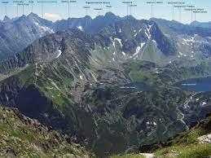

O Tatrach
Tatry to najwyższe pasmo górskie w Polsce i w całości znajdują się na terenie Polski i Słowacji. Tatrzański Park Narodowy to miejsce, gdzie można zobaczyć dziką przyrodę i malownicze krajobrazy.

Tatry to najwyższe pasmo górskie w Polsce i w całości znajdują się na terenie Polski i Słowacji. Tatrzański Park Narodowy to miejsce, gdzie można zobaczyć dziką przyrodę i malownicze krajobrazy.